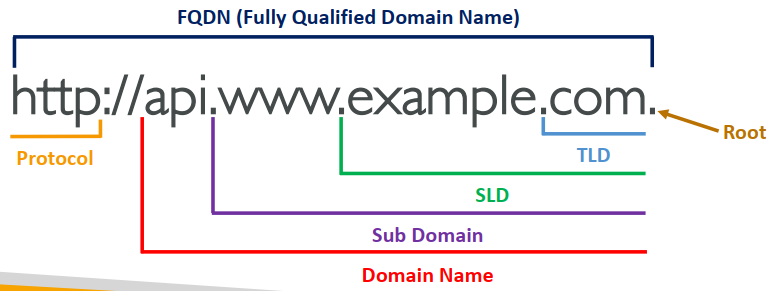

1. DNS Terminologies
- Domain Registrar: Amazon Route 53, GoDaddy, …
- DNS Records: A, AAAA, CNAME, NS, …
- Zone File: contains DNS records
- Name Server: resolves DNS queries (Authoritative or Non-Authoritative)
- Top Level Domain (TLD): .com, .us, .in, .gov, .org, …
- Second Level Domain (SLD): amazon.com, google.com, …

2. Amazon Route 53
- A highly available, scalable, fully managed and Authoritative DNS
- Authoritative = the customer (you) can update the DNS records
- Route 53 is also a Domain Registrar
- Ability to check the health of your resources
- The only AWS service which provides 100% availability SLA (Service Level Agreements 服务级协定)
- Why Route 53? 53 is a reference to the traditional DNS port
- $0.50 per month per hosted zone
3. Route 53 – Records
- Domain/subdomain Name – e.g., example.com
- Record Type – e.g., A or AAAA
- Value – e.g., 12.34.56.78
- Routing Policy – how Route 53 responds to queries
- TTL – amount of time the record cached at DNS Resolvers
4. Route 53 – Record Types
- A – maps a hostname to IPv4
- AAAA – maps a hostname to IPv6
- CNAME – maps a hostname to another hostname
- The target is a domain name which must have an A or AAAA record
- Can't create a CNAME record for the top node of a DNS namespace (Zone Apex)
- Example: you can't create for example.com, but you can create for www.example.com
- NS – Name Servers for the Hosted Zone
- Control how traffic is routed for a domain
5. Route 53 – Records TTL (Time To Live)
Except for Alias records, TTL is mandatory for each DNS record
6. CNAME vs Alias
AWS Resources (Load Balancer, CloudFront...) expose an AWS hostname: lb1-1234.us-east-2.elb.amazonaws.com and you want myapp.mydomain.com CNAME:
- Points a hostname to any other hostname (app.mydomain.com => blabla.anything.com)
- ONLY FOR NON ROOT DOMAIN (aka something.mydomain.com)
Alias:
- Points a hostname to an AWS Resource (app.mydomain.com => blabla.amazonaws.com)
- Works for ROOT DOMAIN and NON ROOT DOMAIN (aka mydomain.com)
- Free of charge
- Native health check
- Alias Record is always of type A/AAAA for AWS resources (IPv4 / IPv6)
- You can't set the TTL
- You cannot set an ALIAS record for an EC2 DNS name
7. Routing Policies - Simple
- If multiple values are returned, a random one is chosen by the client
- When Alias enabled, specify only one AWS resource
- Can't be associated with Health Checks
8. Routing Policies – Weighted
- Control the % of the requests that go to each specific resource
- Assign each record a relative weight, Weights don't need to sum up to 100
- DNS records must have the same name and type
- Can be associated with Health Checks
- Use cases: load balancing between regions, testing new application versions…
- Assign a weight of 0 to a record to stop sending traffic to a resource
- If all records have weight of 0, then all records will be returned equally
9. Route 53 – Health Checks
HTTP Health Checks are only for public resources
- Health Check => Automated DNS Failover:
- Health checks that monitor an endpoint (application, server, other AWS resource)
- Health checks that monitor other health checks (Calculated Health Checks)
- Health checks that monitor CloudWatch Alarms (full control !!) – e.g., throttles of DynamoDB, alarms on RDS, custom metrics, … (helpful for private resources)
- Health Checks are integrated with CW metrics
10. Health Checks – Monitor an Endpoint
- About 15 global health checkers will check the endpoint health
- Healthy/Unhealthy Threshold – 3 (default)
- Interval – 30 sec (can set to 10 sec – higher cost)
- Supported protocol: HTTP, HTTPS and TCP
- If > 18% of health checkers report the endpoint is healthy, Route 53 considers it Healthy. Otherwise, it’s Unhealthy
- Ability to choose which locations you want Route 53 to use
- Health Checks pass only when the endpoint responds with the 2xx and 3xx status codes
- Health Checks can be setup to pass / fail based on the text in the first 5120 bytes of the response
- Configure you router/firewall to allow incoming requests from Route 53 Health Checkers
11. Routing Policies – Multi-Value
- Use when routing traffic to multiple resources
- Route 53 return multiple values/resources
- Can be associated with Health Checks (return only values for healthy resources)
- Up to 8 healthy records are returned for each Multi-Value query
- Multi-Value is not a substitute for having an ELB
12. Instantiating Applications quickly
- EC2 Instances:
- Use a Golden AMI: Install your applications, OS dependencies etc.. beforehand and launch your EC2 instance from the Golden AMI
- Bootstrap using User Data: For dynamic configuration, use User Data scripts
- Hybrid: mix Golden AMI and User Data (Elastic Beanstalk)
- RDS Databases:
- Restore from a snapshot: the database will have schemas and data ready!
- EBS Volumes:
- Restore from a snapshot: the disk will already be formatted and have data!
13. Elastic Beanstalk – Overview
- Elastic Beanstalk is a developer centric view of deploying an application on AWS
- It uses all the component's we've seen before: EC2, ASG, ELB, RDS, …
- Managed service
- Automatically handles capacity provisioning, load balancing, scaling, application health monitoring, instance configuration, …
- Just the application code is the responsibility of the developer
- We still have full control over the configuration
- Beanstalk is free but you pay for the underlying instances
14. Elastic Beanstalk – Components
- Application: collection of Elastic Beanstalk components (environments, versions, configurations, …)
- Application Version: an iteration of your application code
- Environment
- Collection of AWS resources running an application version (only one application version at a time)
- Tiers: Web Server Environment Tier & Worker Environment Tier
- You can create multiple environments (dev, test, prod, …)